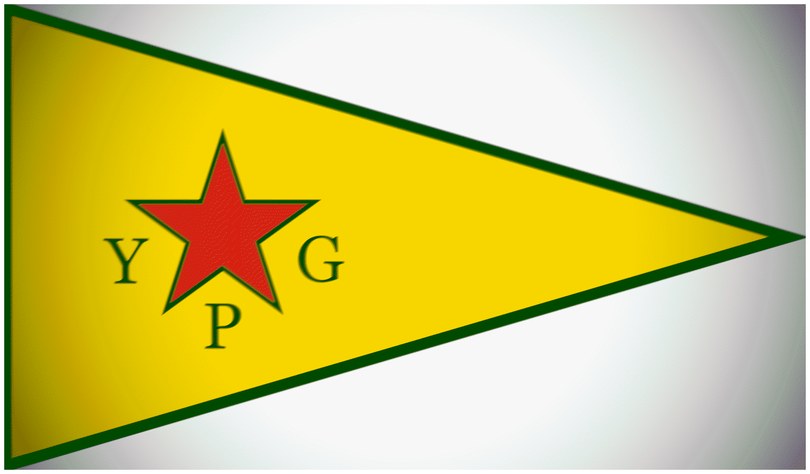
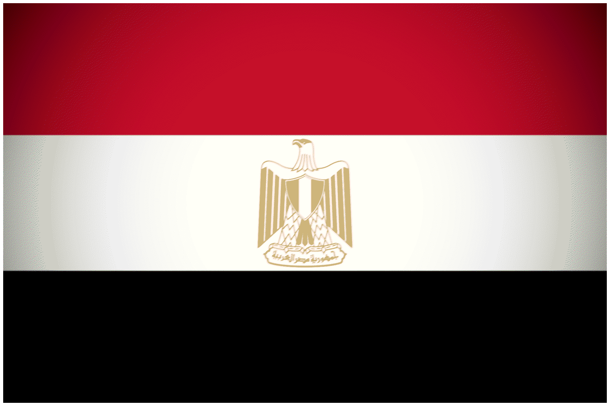
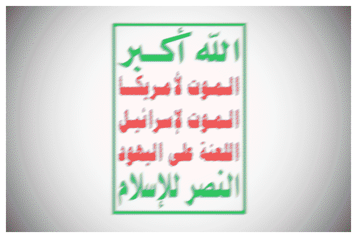
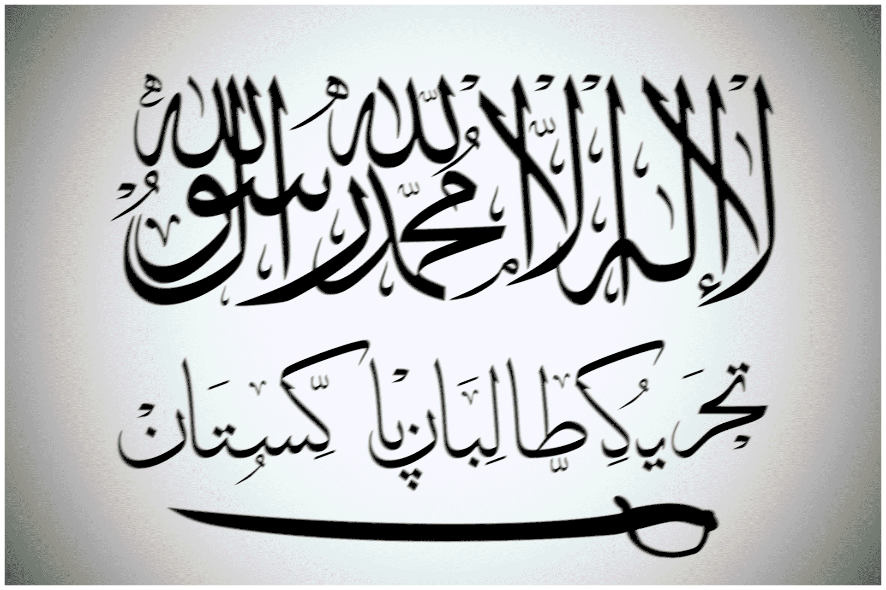
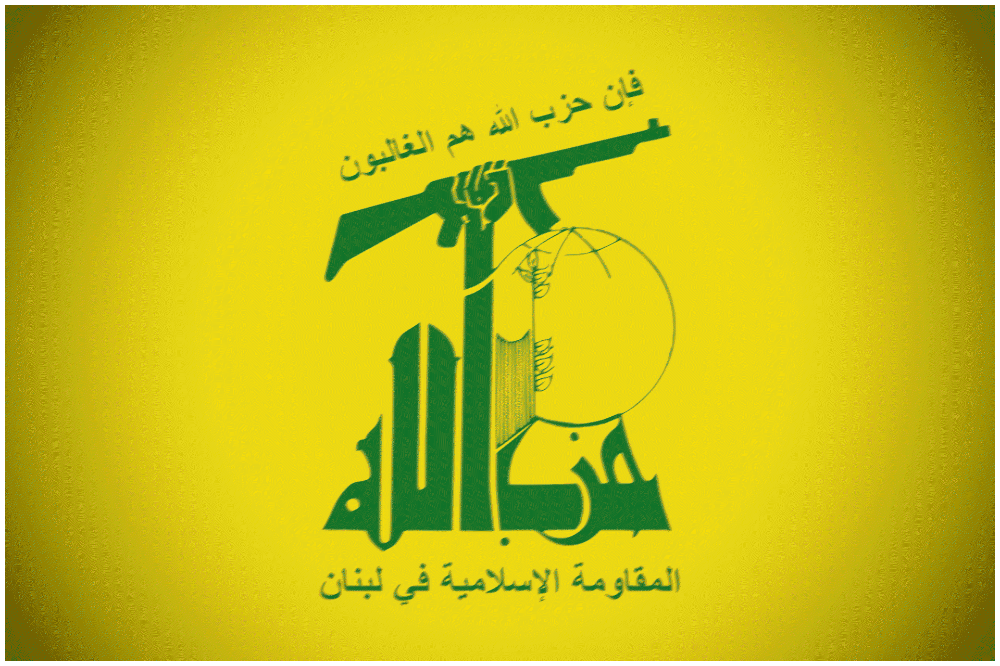
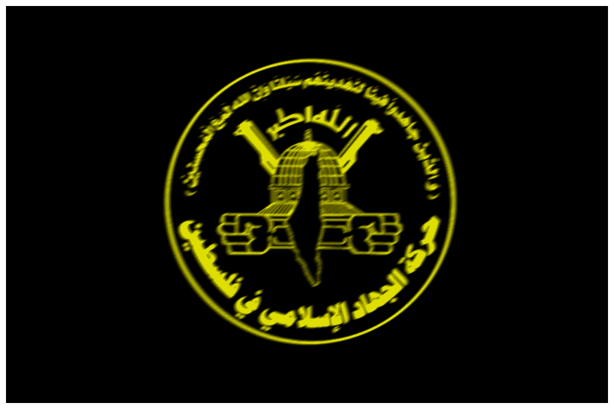
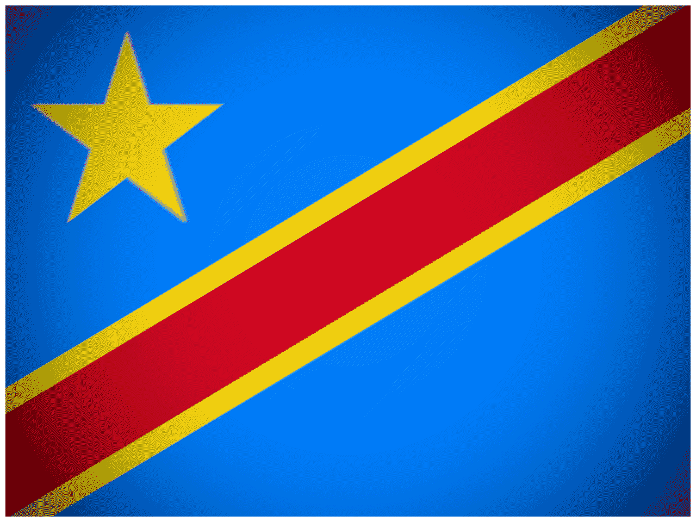
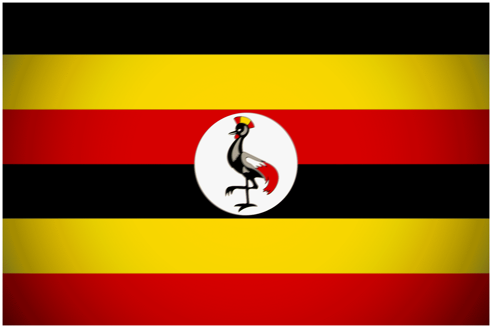
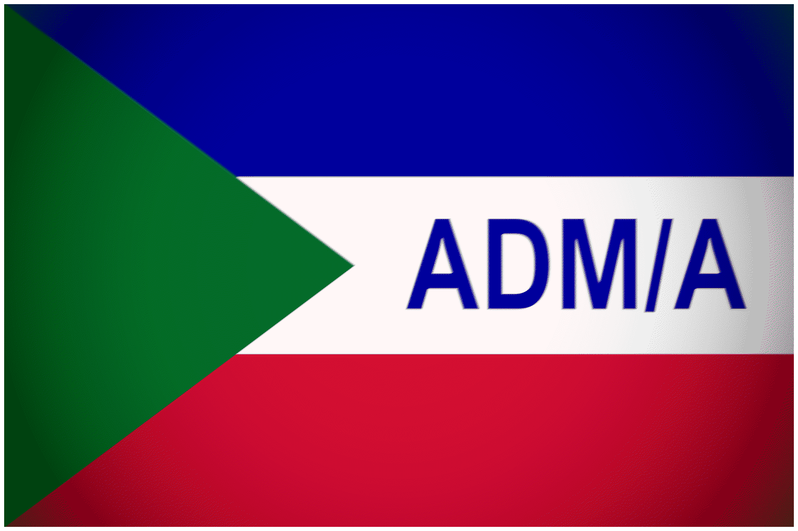
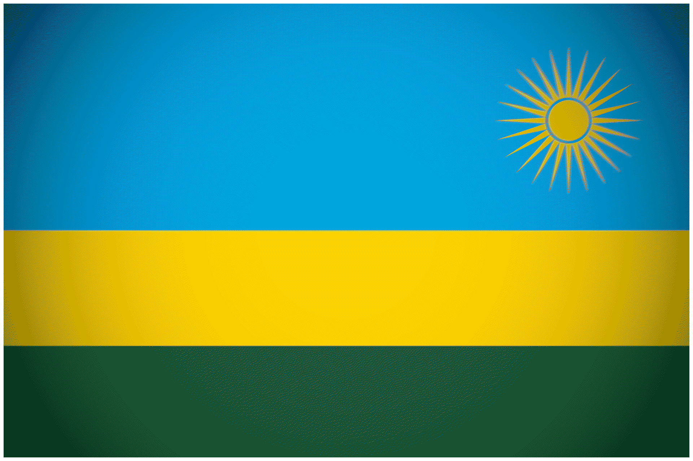

Attacks Attributed to the Islamic State
Attacks Attributed to the Islamic State
Updated: 2/9/25
Table of Contents
- Notable Actions by the Islamic State in Bilad ash-Sham
- Notable Actions by the Islamic State in Iraq
- Notable Actions by the Islamic State - Libya Province
- Notable Actions by the Islamic State - Yemen Province
- Notable Actions by the Islamic State in the Rest of the Middle East
- Notable Actions by Islamic State - Khorasan Province
- Notable Actions by Islamic State - Caucasus Province
- Notable Actions by the Islamic State in Europe
- Notable Actions by the Islamic State in North America
- Notable Actions by Islamic State - East Asia Province (AKA Abu Sayyaf)
- Notable Actions by Islamic State - Central Africa Province (AKA ADF-Baluku)
Notable Actions by the Islamic State in Bilad ash-Sham
• June 26, 2015: A few months after their humiliating withdrawal from Kobani canton, a hundred or so Islamic State  fighters infiltrated the city under the cover of darkness and started opening fire on civilians after three other militants detonated their SVBIEDs in the city's northern edge. They targeted schools and hospitals, holding some civilians hostage. YPG
fighters infiltrated the city under the cover of darkness and started opening fire on civilians after three other militants detonated their SVBIEDs in the city's northern edge. They targeted schools and hospitals, holding some civilians hostage. YPG 
fighters, assisted by United States air cover, took four days to fully clear the city again from Islamic State militants. The coordinated attack on the city of Kobani killed more than 220 civilians and around 35 YPG militiamen. Perhaps the message from the Islamic State to the Kurds of Kobani was that they were still a danger to them.
• November 12, 2015: A dual Islamic State suicide bombing in the shi'ite neighborhood of southern Beirut, Lebanon, kills 43 people and injures over 200, making it the largest terrorist attack in Beirut's post-war history. Attackers targeted a shi'ite mosque and a bakery during Isha salah, maximizing possible shi'ite deaths. The Islamic State claimed responsibility for the attack, saying that they will continue killing the "apostates". It is also worth noting that southern Beirut is a stronghold for Hezbollah in the city, a major thorn in the side of IS .
• December 11, 2015: Three car bombs detonated themselves in the north-eastern Kurdish town of Tell Tamer, killing 60 and injuring 80. The attackers targeted a hospital and a market. The Islamic State claimed the attack as it was battling the YPG in the regional capital of al-Hasakah.
• January 31, 2016: Two Islamic State suicide bombers detonated themselves in the mainly shi'ite Damascus neighborhood of Sayyidah Zaynab, killing 71, including 42 Syrian regime  fighters and shi'ite jihadists. The neighborhood of Sayyidah Zaynab is highly important to shi'ites as it contains a mosque that holds the grave of the daughter of Ali and the granddaughter of the prophet Muhammad. This was an act of inter-Islamic sectarianism and it took place during peace negotiations in Geneva, Switzerland, between the regime and the opposition.
fighters and shi'ite jihadists. The neighborhood of Sayyidah Zaynab is highly important to shi'ites as it contains a mosque that holds the grave of the daughter of Ali and the granddaughter of the prophet Muhammad. This was an act of inter-Islamic sectarianism and it took place during peace negotiations in Geneva, Switzerland, between the regime and the opposition.
• February 21, 2016: Two suicide bomber detonated his IED vehicle literally 400 meters from the shi'ite sacred site of the Sayyidah Zaynab mosque, which contains the grave of the daughter of Ali. The result was the death of 134 people, many children.
• May 23, 2016: Eight bombings, including suicide bombs, targeted members of the Alawite minority group in Jableh and in Tartus on the Syrian coast, killing 184 and injuring at least 200, resulting in one of the deadliest Islamic State attacks in Syria. The Islamic State said that the attacks on the relatively conflict less Syrian coast were in revenge for the Alawite government airstrikes "on Muslim towns" (Alawites are not seen as Muslim by the Islamic State ). Perhaps it was also a threat to the Russians, who have military bases on the Syrian coast. A conflict monitor also reported government supporters attacking and burning down tents of internally displaced Syrians after the IS attacks, a claim that was fervently denied by the Assad regime governor of Tartous.
• July 27, 2016: Two suicide car bombs attacked the Kurdish stronghold of Qamishli on the border with Turkey  , killing 57 and injuring more than 170. The explosions also detonated a gas cylinder and an electric generator, which added on to the size of the blast. The Islamic State claimed responsibility, saying it was in retaliation for the Kurdish-led Syrian Democratic Force's offensive on the strategic city of Manbij in Aleppo governorate.
, killing 57 and injuring more than 170. The explosions also detonated a gas cylinder and an electric generator, which added on to the size of the blast. The Islamic State claimed responsibility, saying it was in retaliation for the Kurdish-led Syrian Democratic Force's offensive on the strategic city of Manbij in Aleppo governorate.
• August 15, 2016: During the start of Turko-Syrian military operations in Operation Euphrates Shield, an Islamic State suicide bomber attacked the Atmeh border crossing with Turkey in Idlib governorate, killing 50 Syrian rebels, as well as several civilians. The groups affected in question were ones supported by the US  and were given BGM-71 TOWs by them.
and were given BGM-71 TOWs by them.
• January 7, 2017: An Islamic State suicide vehicle detonated itself in front of a marketplace near an Islamic courthouse in rebel controled Azaz city, Aleppo governorate, killing 60 and injuring 50. Azaz was recently captured by a combined force of Turks and rebels during Operation Euphrates Shield in late 2016, but it eventually became a stronghold for them in northern Syria.
• July 25, 2018: Dozens of Islamic State attackers attacked various villages across as-Suwayda governorate during the Syrian army's offensive in the south, killing 258 and injuring 180 through a combination of suicide attacks and mass shootings, resulting in perhaps the bloodiest IS attack in Syria. The attacks targeted the Druze minority in Syria, an ethnoreligious minority in Syria known in the Syrian civil war for their political neutrality. In the aftermath, the Druze people were highly critical of the incompetent Syrian army response, with some going so far to say that they let the attacks happened so they could justify harsher and stricter control of Suwayda governorate, which had enjoyed a level of autonomy from Damascus.
• March 22, 2022: An Arab-Israeli Islamic State supporter stabbed and ran over people in the Israel  city of Beersheba, killing four and injuring two before he was apprehended by an armed citizen. The attack was one of the deadliest Islamic State attacks in the Jewish state, as many Palestinians and Arab-Israelis have the option to join Hamas, etc.
city of Beersheba, killing four and injuring two before he was apprehended by an armed citizen. The attack was one of the deadliest Islamic State attacks in the Jewish state, as many Palestinians and Arab-Israelis have the option to join Hamas, etc.
• February 17, 2023: In one of the deadliest attacks in Syria in years, Islamic State militants near the town of al-Sukhnah in the Homs desert attacked a group of truffle hunters escorted by Syrian regime soldiers, killing nearly 70. As the Islamic State started to retreat into the desert, they started to resort to these sorts of attacks, murdering hordes of vulnerable truffle hunters who work in the desert. Truffle hunting is a highly lucrative business, with attacks possibly capturing and taking that source of income for their own.
• April 16, 2023: In the Hama desert, Islamic State militants attacked and opened fire on a group of truffle hunters and a group of shepherds, killing a total of 41, including 17 pro-Assad militiamen . This would be the worst IS attack in Syria before the fall of the Assad regime .
• June 22, 2025: In the first major terrorist attack since the fall of the Assad Regime , a militant opened fire and then detonated his suicide belt inside of a Greek Orthodox Church in Damascus, Syrian  , killing 30 and injuring 54. 350 people were inside for the Divine Liturgy tradition, showing the terrorist could have done research on the "best" timing for an attack. While no group initially claimed responsibility for the attack, the new Ministry of the Interior blamed the Islamic State . They also said that the attacker came from the al-Hawl refugee camp, where thousands of Islamic State prisoners remain, some indoctrinating civilian refugees into the cause.
, killing 30 and injuring 54. 350 people were inside for the Divine Liturgy tradition, showing the terrorist could have done research on the "best" timing for an attack. While no group initially claimed responsibility for the attack, the new Ministry of the Interior blamed the Islamic State . They also said that the attacker came from the al-Hawl refugee camp, where thousands of Islamic State prisoners remain, some indoctrinating civilian refugees into the cause.
Notable Actions by the Islamic State in Iraq
• June 10, 2014: During the start of the offensive in northern Iraq  , Islamic State militants stormed and murdered up to 1,000 mostly shi'ites in a prison complex in Badush, near Mosul. The large mass graves were only found years later by the PMF shi'ite paramilitary, with investigations by the UN only published in late 2024. The massacre was used by the UN to describe extreme genocidal intent.
, Islamic State militants stormed and murdered up to 1,000 mostly shi'ites in a prison complex in Badush, near Mosul. The large mass graves were only found years later by the PMF shi'ite paramilitary, with investigations by the UN only published in late 2024. The massacre was used by the UN to describe extreme genocidal intent.
• June 12, 2014: In one of the bloodiest massacres of the entire IS campaign, Islamic State militants took advantage of the chaos and the unease, storming Camp Speicher in northern Iraq , and murdering at least 1,700 captured Iraqi Army cadets, resulting in literally the second largest terrorist attack in world history, according to Nordic Monitor. The Islamic State , which specifically targeted shi'ite and non-muslim cadets, was gleeful in their sectarian slaughter, recording it for propaganda purposes, with the bodies and blood visible on satellite imagery. Maybe as a signal of "coexistance" between Baathist insurgents and the early Islamic State (or as false propaganda), the Iraqi government said that more than 50 individuals involved in the massacre were former agents of Baathist elements. As the attack came during a hectic and extremely chaotic part of Iraqi history, it took years for even some of the attackers to be arrested and tried.
• August 3, 2014: The Islamic State seized Sinjar city and besieged tens of thousands of the Yazidi ethnoreligious minority on a mountain range, allowing for Islamic State fighters to conduct mass executions of Yazidis throughout the region. During weeks of massacres, around 5,000 were killed, thousands abducted into slavery, and thousands more forcefully converted to the Salafi Jihadist vein of Islam. This horrifying humanitarian crisis and the real possibility of genocide forced the United States to renew a military campaign in Iraq , starting with heavy airstrikes. In four months, YPG and PKK militants relieved besieged elements and started to threaten Sinjar with liberation. In addition, thousands of Yazidi girls were captured and trafficked into sexual slavery, some were taken for years. The "Islamic" State built theological reasoning and justification for their acts.
• October 30, 2014: Islamic State militants murdered 75 Albu Nimr tribals in the al-Anbar governorate city of Hit, which was taken by their forces earlier in the month. Hit is a strategically significant city, as closing the city's dam would result in mass flooding and death.
• January 26, 2015: The Islamic State conducted mass executions of former Iraqi military personnel and civilian activists in retaliation for American airstrikes on Mosul, killing 300. It was one of the largest mass executions during the Islamic State 's occupation of Mosul. According to an Iraqi general, many of those killed were also tortured in rough detention centers prior to their execution. Killed in different locations across the city, they were thrown and buried in a mass grave in a suburb.
• July 17, 2015: An SVBIED was detonated by the Islamic State right next to an ice cart in the majority shi'ite city of Khan Bani Saad right next to Baghdad, killing 120 and injuring more than 130. The suicide bomber maximized his kills by detonating right next to an ice cart during the very hot Eid al-Fitr holiday. The so called "Islamic" State said it was done in retaliation for the deaths of Sunnis in another part of Iraq .
• August 13, 2015: The Islamic State detonated a large cargo truck ladened with explosives at a major food market inside of Baghdad's shi'ite district at Sadr City, killing 76, and injuring 212. The truck was filled with cheap tomatoes so people in the market would be attracted to it. The Islamic State claimed responsibility for the attack, saying that they were enabled by Allah to target shi'ite PMF militiamen (rebuked by UN officials in Iraq ). Local shi'ites were enraged with government incompetence, blaming it for the constant stream of terrorist attacks. Some say that the attacks might've been allowed or even premeditated by Iraqi government in order to control shi'ites.
• January 11, 2016: A string of six Islamic State suicide bombings occurred in Baghdad and the suburb of Miqdadiyah targeting Shi'ite civilians, killing 128. While the shias were the targets, security officials said that many sunnis were also hurt in the attack as well.
• February 28, 2016: Suicide bombers on laced motorbikes detonated themselves inside of a crowded market place in predominantly shi'ite Sadr City neighborhood of Baghdad, killing 70 and injuring up to 100. Another bomber detonated himself minutes later as people were coming in to assess the earlier damage, a sort of terrorist double tap strike.
• March 6, 2016: A fuel tanker was detonated at an Iraqi checkpoint south of Baghdad in Hilla, killing 60 and injuring 70, the vast majority of which were civilians. Hilla is a strategic city with a majority shi'ite population. The Islamic State claimed responsibility for the attack, which was done in the same week as a suicide bombing in Baghdad that killed 70+.
• July 3, 2016: An Islamic State heavy truck bomber detonated himself in a very crowded market in the shi'ite majority district of Karrada, killing anywhere between 350 to 1000 and resulting in one of the deadliest suicide bombings by the Islamic State . The explosion, which was done during Ramadan in retaliation for the Islamic State 's loss of Fallujah, ended up causing a fire that spread to several buildings on the same street, badly damaging them and resulting in even more casualties. Many Iraqis were furious at the government for their precieved incompetence, with some going so far as to throw stones at the Prime Minister of Iraq when he was visiting the destruction. It was only after 7 years when the government announced that they had arrested and hung the masterminds of the terrorist attack.
• October 28, 2016: As Islamic State forces were surrounded in Mosul's satellite town of Hamam al-Alil, they started to forcefully recruit townsfolk (including literal children), butcher those who refused, and forcibly displacing many to strategic sites to be used as human shields. Cruelly, an agricultural college that had been used to teach methods of spreading life, was used as an execution site for a brutal terrorist state. Only a week later, Iraqi security forces had recaptured Hamam al-Alil as a part of their campaign on the Islamic State 's defacto Iraqi capital at Mosul, uncovering mass graves containing hundreds of people.
• November 24, 2016: Shi'ite pilgrims coming from the Arba'een pilgrimage, many from Iran  and from southern Iraq , were targeted by an Islamic State truck bomber, killing 125 and injuring atleast 95. This attack occurred during the backdrop of the coalition's campaign on Mosul, which involved extensive Iranian and shi'ite PMF assistance and involvement. It was condemned by both the Iranians and the Americans , interestingly. Despite the Islamic State 's actions, millions still made pilgrimage to Karbala.
and from southern Iraq , were targeted by an Islamic State truck bomber, killing 125 and injuring atleast 95. This attack occurred during the backdrop of the coalition's campaign on Mosul, which involved extensive Iranian and shi'ite PMF assistance and involvement. It was condemned by both the Iranians and the Americans , interestingly. Despite the Islamic State 's actions, millions still made pilgrimage to Karbala.
• January 2, 2017: Three Islamic State suicide bombers detonated their cars in a market in Sadr City as French  President Hollande was visiting Baghdad, killing 56 and injuring more than 120. Perhaps the attack was supposed to be seen as a message to Iraqis, saying that they weren't even safe even with the increased security that a foreign visit would necessitate.
President Hollande was visiting Baghdad, killing 56 and injuring more than 120. Perhaps the attack was supposed to be seen as a message to Iraqis, saying that they weren't even safe even with the increased security that a foreign visit would necessitate.
• September 14, 2017: Multiple Islamic State militants opened fire and detonated themselves in a large coordinated attack on Shi'ite pilgrims in Nasiriyah, killing 84 and injuring 93. The attackers terrorized a junction in the city where many pilgrims stopped while traveling to the holy cities of Karbala and Najaf, allegedly disguised as PMF shi'ite militiamen. These attacks were relatively rare in southern Iraq , the stronghold of Shi'ism in the country.
Notable Actions by the Islamic State - Libya Province
• February 15, 2015: Islamic State militants in Libya  beheaded 21 Coptic Christian migrant workers on film in the Libyan coastline near Sirte. In the video published by al-Hayat media center, the jihadists said they would continue killing those Christians who do not convert until "Jesus will descend". The militants said their actions were done in retaliation for a Coptic convert to Islam being allegedly detained by that church. For their death in the name of their religion, the Coptic Church of Egypt canonized the martyrs as saints, a descion also made by the Catholic Church in Rome. The secular al-Sisi military regime in Egypt
beheaded 21 Coptic Christian migrant workers on film in the Libyan coastline near Sirte. In the video published by al-Hayat media center, the jihadists said they would continue killing those Christians who do not convert until "Jesus will descend". The militants said their actions were done in retaliation for a Coptic convert to Islam being allegedly detained by that church. For their death in the name of their religion, the Coptic Church of Egypt canonized the martyrs as saints, a descion also made by the Catholic Church in Rome. The secular al-Sisi military regime in Egypt 
started rounds of airstrikes against Islamic State targets in Libya .
• February 20, 2015: Islamic State operatives detonated three bombs in al-Qubbah, eastern Libya , targeting a petrol station, a police station, and a home for the president of Libya 's House of Representatives, killing at least 40, including half a dozen Egyptians. The Islamic State claimed responsibility for the attack, saying it was in retaliation for the recent Egyptian military airstrikes against Islamic State targets in Derna and Sirte.
• April 19, 2015: Two months after the beheading of 20 Egyptian copts on the Libyan Coast, the Islamic State group filmed the mass beheading and execution of two groups of Christian migrants, the majority of whom were Ethiopian Orthodox Christian, resulting in the deaths of atleast 30. In the video, the jihadists reiterated their twisted version of history and their rationale for these actions, saying that they did not pay or jizya. The Ethiopian church chose to designate the dead as martyrs in "the land of Egypt".
• January 7, 2016: An Islamic State suicide bomber (probably coming from IS -controlled Sirte) detonated his truck at a police training camp in the town of Zilten in coastal western Libya , killing atleast 60 and injuring more than 200. The Islamic State in Libya claimed responsibility for the attack, indirectly implying that the bomber was a muhajir, or in other words, a foreign fighter.
Notable Actions by the Islamic State - Yemen Province
• March 20, 2015: Four Islamic State suicide bombers detonated themselves inside two shi'ite mosques in Yemen's Houthi 
controlled capital of Sana'a, killing 142 and injuring more than 350. The Islamic State claimed responsibility for what is considered to be the first and most deadly of their Yemen  attacks. They said they would continue their attacks until the "Safavid" Iranians left Yemen . Others suspected AQAP , despite denials by that group. It is considered the deadliest terrorist attack in Yemeni history.
attacks. They said they would continue their attacks until the "Safavid" Iranians left Yemen . Others suspected AQAP , despite denials by that group. It is considered the deadliest terrorist attack in Yemeni history.
• May 15, 2015: Two Islamic State suicide bombers targeted two different military bases in the city of Mukalla located in the Hadhramaut coast. The first bomber targeted a police recruiting centre, while the second bomber targeted the residence of a pro-Hadi commander. In total, at least 47 people were killed and more than 60 were injured. These attacks occurred only a month after pro-Hadi forces had retaken Mukalla from AQAP , who had used the city as their capital in Yemen .
• October 6, 2015: Perhaps going for the jugular, two Islamic State militants detonated their vehicles in an attempt to destroy a hotel that contained the Vice President and Prime Minister of the pro-Hadi forces in Aden. 15 people were killed in the attack, 5 of which were coalition soldiers. The attack was also blamed on local Houthi forces, which a pro-Hadi minister said had launched rockets at the building. Both officials of the Saudi-backed government evacuated and were left unscathed.
• August 29, 2016: An Islamic State SVBIED was driven to and detonated in a pro-Hadi and anti-Houthi military base, killing 71 and injuring 67. The target were new pro-Hadi military recruits who were signing up at a school. They were buried by a collapsing roof, possibly claiming more lives. The attack was claimed by the Islamic State .
Notable Actions by the Islamic State in the Rest of the Middle East
• June 26, 2015: An Islamic State suicide bomber detonated himself inside of a shi'ite mosque in Kuwait  City during Ramadan Jumma prayers, killing 27 and injuring over 200. Terrorism, and specifically Islamic State terrorism, is relatively rare phenomenon in Kuwait , a decently prosperous Gulf kingdom.
City during Ramadan Jumma prayers, killing 27 and injuring over 200. Terrorism, and specifically Islamic State terrorism, is relatively rare phenomenon in Kuwait , a decently prosperous Gulf kingdom.
• October 10, 2015: Two bombs detonated inside of a leftist and trade unionist protest rally near domestic security HQ in the capital city of Turkey , Ankara, killing 109 and injuring over 500 in the deadliest terrorist attack in Turkey , surpassing that of other jihadists and the PKK separatists, adding on to an already tense political climate that would explode into an attempted coup attempt a year later. The Ankara bombing, while never officially claimed by the Islamic State , was linked to it after investigations by Turkish intel.
• October 31, 2015: An Islamic State Sinai militant detonated an explosive onboard Metrojet Flight 9268, crashing the plane and killing all 224 passengers and crew. Nearly all of the passengers were Russian  tourists who were coming home from resorts on the southern Sinai peninsula, making the attack perhaps retaliation for Russia's intervention in Syria against the Islamic State . It took months for Sisi and the Egyptian military junta to admit that the crash was caused by a bombing. Lawsuits by the families of those affected against Egyptian authorities for claimed negligence and incompetence continue to this day, giving victims little closure.
tourists who were coming home from resorts on the southern Sinai peninsula, making the attack perhaps retaliation for Russia's intervention in Syria against the Islamic State . It took months for Sisi and the Egyptian military junta to admit that the crash was caused by a bombing. Lawsuits by the families of those affected against Egyptian authorities for claimed negligence and incompetence continue to this day, giving victims little closure.
• November 24, 2017: 40 Islamic State militants launched a large coordinated attack on a Sufi mosque conducting Jumma prayers in the northern village of al-Rawda in Sinai, Egypt , killing 311 and injuring 128, becoming one of the worst attacks of the entire Sinai insurgency. The attackers used burnt vehicles to prevent people from escaping, allowing for them to be gunned down or targeted by RPG explosives. The attackers were condemned by both the secular Junta as well as the Egyptian branch of the Muslim Brotherhood  and the al-Azhar Islamic university. Interestingly, the attack was also condemned by the Sinai al-Qaeda
and the al-Azhar Islamic university. Interestingly, the attack was also condemned by the Sinai al-Qaeda  affiliate Jund al-Islam. The attacks resulted in escalating Egyptian counter terrorism campaigns in the Sinai, which would eventually result in their victory by the 2020s.
affiliate Jund al-Islam. The attacks resulted in escalating Egyptian counter terrorism campaigns in the Sinai, which would eventually result in their victory by the 2020s.
Notable Actions by Islamic State - Khorasan Province
• January 26, 2015: High straight out of their successes in Syria and Iraq , Spokesman Abu Muhammad al-Adnani announced the creation of a Wilayah (province) in the Greater Khorosan region, encompassing Pakistan  , Afghanistan
, Afghanistan  , and parts of India
, and parts of India  and Iran . The new wilayah recruited from a mix of dissident Taliban
and Iran . The new wilayah recruited from a mix of dissident Taliban  , Pakistani Taliban
, Pakistani Taliban 
, and Haqqani network officers and militants. They would become fast enemies and rivals of both Taliban groups, al-Qaeda , NATO, and the Afghan National Army .
• July 23, 2016: Two Islamic State Khorasan suicide bombers detonated themselves in the Hazara Shi'ite district of Kabul, Afghanistan , during a protest against the redirecting of an energy project, which they believed was an act of discrimination, killing over 97 and injuring 26 and resulted in the worst Islamic State Khorasan attack so far. This occurred after the Ghani presidency had declared victory against the Islamic State , truly a salt to a wound. It would be the start of the Islamic State campaign against the Hazaras in not just Kabul, but the country as a whole. Some claimed that the government's placement of barriers around the presidential palace had made escape and evacuation much harder.
• August 8, 2016: A jihadist suicide bomber detonated himself in Pakistan 's Quetta government hospital, shortly before militants opened fire, killing up to 94 people and injuring atleast 120. The attack killed some journalists who were covering a protest. Both the Islamic State Khorasan and the Pakistani Taliban offshoot Jamaat-Ul-Ahraar claimed responsibility for the attack. Despite this, the Pakistani government blamed the Indian and Afghan foreign intelligence organizations, with no proof to back it up. Some opposition groups blamed the ruling party in its intelligence failures, with one saying that the intel officers should be fired if they are not found.
• February 16, 2017: Islamic State Khorasan claimed responsibility for a terrorist attack that occurred in the Sufi shrine in Sehwan city, Pakistan , killing 91 and injuring over 300, resulting in one of the deadliest ISIS-K attacks in Pakistan . In response, the Pakistani military launched Operation Radd-ul-Fasaad, launching airstrikes and shelling ISIS-K targets in Nanagarhar. The sufis reopened the shrine the next day, essentially pulling a middle finger to the Islamic State bomber who wanted it destroyed. The attack escalated the conflict in Khyber Pakhtunkhwa and its spillover into Afghan territory .
• December 28, 2017: An Islamic State Khorasan terrorist detonated himself in a shi'ite cultural center in Kabul while they were discussing the 38th anniversary of the Soviet Invasion of Afghanistan , killing 49 and injuring 80, including those from the Afghan Voice news Agency. The Taliban denied responsibility, though they are not known for targeting the shi'ites. It turns out that an event marking the start of one invasion ended as a result of another invasion.
• April 21, 2019: Nine suicide bombers detonated themselves in 6 different locations in Sri Lanka during Easter sunday, killing 321 and injuring over 500, resulting in one of the deadliest terrorist attacks committed by Islamic State Khorasan. The six targets included three churches from different sects and three hotels, including those filled with foreign tourists. Some of the suicide bombers had previously been trained by Islamic State forces in the Mashriq and the attack was claimed quickly by Amaq News. The act of terror heavily affected the Sri Lankan economy, reducing tourism and contributing to the country's decline at that time. The government of the country used the attack to ban the burqa and increase surveillance on mosques in Sri Lanka.
• August 17, 2019: An Islamic State Khorasan bomber detonated himself inside of a wedding hall in Kabul, Afghanistan , killing 92 and injuring over 140. This explosion, like others, was targeting the Hazara Shi'ite minority district in the capital. The Taliban fiercely condemned the attacks and denied responsibility. The attack occurred the day before the 100th anniversary of independence, where security was supposed to be tightened.
• May 8, 2021: Islamic State Khorasan SVBIED and two IEDs detonated themselves outside of a school in Kabul during those chaotic months before the American withdrawal, killing 90 and injuring 240. The suicide attack was blamed on the Taliban by the then Afghan government despite the former's denial of the attack. The attack targeted a school located in a Hazara shi'ite area, which adds even more to the ISIS-K argument, as the Taliban sought to legitimize themselves during this time period. Many Afghans blamed the Ghani administration presumably for their inaction against rampant IS attacks in that district of Kabul.
• August 26, 2021: During the chaotic and rapid American withdrawal from Afghanistan , an IS-K province militant detonated himself in Kabul International Airport, opening the way for Islamic State gunmen to open fire, killing 169 Afghan civilians and 13 US service members. In response, the American military launched a tirade of airstrikes and drone strikes against purported Islamic State strongholds, killing dozens. The Taliban condemned the attacks and vowed to continue their war against the Islamic State . Later, a CNN analysis would examine the chaos of the event and come to the conclusion that some of the casualties were inflicted by the coalition during the chaos.
• October 15, 2021: Four Islamic State Khorasan militants detonated themselves in a shi'ite mosque in Kandahar, Afghanistan , killing 65 and injuring over 70. The would be bombers were able to overpower the masjid's defenses easily and entered it while up to 500 people were inside. In response to the terrorist attack, the ruling Islamic Emirate pledged more security at shi'ite mosques and support for the victims. Situations like these allows the Taliban to portray themselves as a great uniter of all Afghans.
• March 4, 2022: In Pakistan 's Khyber Pakhtunkwa Province, an Islamic State militant opened fire on a Shi'ite mosque before detonating his suicide vest, killing 62 and injuring 196, marking Pakistan 's deadliest attack in nearly four years. ISIS-K claimed responsibility, saying that the bomber was an Afghan national who was living in Pakistan for decades. The shi'ites of Pakistan protested and demanded more protection for their communities going forward.
• July 30, 2023: An Islamic State Khorasan suicide bomber detonated himself in a rally in Khyber-Pakhtunkhwa for the Pakistani Deobondi Islamist political party Jamiat Ulema-e-Islam-Fazal, killing atleast 62 people and injuring over 200. JUIF was the target of a terrorist attack because they collaborate and have close ties to the Afghan Taliban , which the Islamic State views as taghut nationalist regime. The TTP condemned the action quickly and the Pakistani government issued a statement condemning the attack.
• January 3, 2024: Two Islamic State suicide bombers detonated themselves in a commemorative ceremony in Kerman, Iran , for former IRGC commander Qassem Soleimani, who was killed 4 years earlier by American forces, killing 103 and injuring over 250. The first bomb ended a procession, throwing the area into chaos, with the second bomb killing those who attempted to escape the first. The act of terror was used by Iran to blame Israel and America , despite the latter reportedly informing Iran of a possible incoming attack in the days before. Islamic State Khorasan Province took responsibility on telegram and on its Amaq outlet.
• March 22, 2024: Amidst Russia 's ongoing and brutal war on Ukraine, Islamic State gunmen and bombers launched an attack at the Crocus City Hall music venue, resulting in its complete destruction, the deaths of 150 and the injuries of over 600. The collapse of the roof and the smoke were a major contribution to the death toll. Despite catching four Islamic State affiliated suspects, Russia continued to blame Ukraine and the West for the attack. Interestingly, the attack was carried out by members of Islamic State Khorasan who showcased the attack on telegram and Amaq news Agency, not the branch in the Caucasus.
• December 11, 2024: An Islamic State Khorasan suicide bomber detonated himself in an office building in Kabul, targeting and killing Khalil Haqqani, a senior Taliban leader who acted as the minister of Refugees for Afghanistan and a Haqqani network member, as well as five others. Khalil Haqqani was involved in international fundraising for the Taliban through that network.
Notable Actions by Islamic State - Caucasus Province
• December 31, 2018: A high rise building collapsed in Magnitogorsk, Russia , killing 39 and injuring 17. Putin himself would visit the site and survey the damage. The Islamic State claimed responsibility for the building collapse, but Russian authorities themselves said otherwise, instead pointing to a gas explosion.
• June 23, 2024: Islamic State inspired militants launched a series of small arms attacks against various civilian targets at multiple cities in Dagestan, which included two Orthodox churches and two synagogues, killing 22 and injuring nearly 50. The jihadist terrorist attacks were one of the deadliest in the north Caucasus in years, perhaps as a result of Russian intel distraction in Ukraine. Russian and north Caucasian officials called the attacks a desperate attempt at provoking inter-faith conflict.
• August 23, 2024: Prisoners from Tajikistan and Uzbekistan launched a major attack inside of the IK-9 prison in Surovkino, Volgorod Oblast, taking 12 people hostage, including 8 prison employees, and pledging allegiance to the Islamic State . They proclaimed their attack a revenge for the detention of the Crocus City Hall terrorists. The hostage crisis was solved after the Russian National Guard stormed the compound and killed the four attackers. Nine others were killed in the operation.
Notable Actions by the Islamic State in Europe
• November 13, 2015: Ten jihadists, mostly European born Islamists affiliated with the Brussels cell of the Islamic State , launched a major terrorist attack in the Parisian metropolitan area, hitting multiple locations through mass shootings and suicide bombings, killing 130 and injuring at least 416, resulting in the largest terrorist attack on European soil in years. The six targets were: near France 's national stadium (where French president and German  foreign minister were remaining), the Bataclan concert hall, where the most civilians were killed, two restaurants, and two intersections. In the aftermath, French police raided a suburb and killed the mastermind of the attack, while manhunts occurred in Belgium and in the city. France was put in a state of emergency for months. The Islamic State claimed responsibility for the attack, stating it was done in response of Operation Chammal, the French military's operation against the Islamic State in Syria and Iraq . But instead of stopping it, the Islamic State received ramped up French strikes on their capital at Raqqa. Officials across the world, including from many islamist militant groups (like Hamas
foreign minister were remaining), the Bataclan concert hall, where the most civilians were killed, two restaurants, and two intersections. In the aftermath, French police raided a suburb and killed the mastermind of the attack, while manhunts occurred in Belgium and in the city. France was put in a state of emergency for months. The Islamic State claimed responsibility for the attack, stating it was done in response of Operation Chammal, the French military's operation against the Islamic State in Syria and Iraq . But instead of stopping it, the Islamic State received ramped up French strikes on their capital at Raqqa. Officials across the world, including from many islamist militant groups (like Hamas  , Hezbollah
, Hezbollah 
, PIJ 
, Ahrar al-Sham  , and Jaysh al-Islam
, and Jaysh al-Islam  ) united in opinion to deride the attacks and express their solidarity with the French people .
) united in opinion to deride the attacks and express their solidarity with the French people .
• March 22, 2016: Five jihadists associated with the Islamic State 's cell in Brussels, including four European born Muslims, launched a coordinated bombing attack at the airport and at a metro station at rush hour, killing 32 and injuring 340. Three out of the five terrorists detonated their explosives that were stored in suitcases, while the other two left their targets without detonating their explosives. The Islamic State claimed responsibility for the attack, justifying their attack by saying that Belgium had taken part in the anti-IS coalition. In response, Operation Vigilant Guardian, the deployment of the Belgian army in sensitive locations, was strengthened and the nation's terror threat level was put to the max.
• June 28, 2016: Three Islamic State militants from Russia and Central Asia launched a terror attack on Ataturk International Airport using automatic weapons and suicide bombs, killing 45 and injuring more than 200. For 90 seconds, the three terrorists opened fire on hundreds of passengers, with two of three detonating their suicide belts. In response, Turkey declared the following day for mourning and would invade parts of Aleppo governorate controlled by the Islamic State in Operation Euphrates Shield only two months later.
• July 14, 2016: A mentally ill French -Tunisian  man rammed his 19 tonne cargo truck into Bastille Day celebrations in the southern coastal city of Nice, killing 86 and injuring over 450, making it one of the deadliest terrorist attacks on European soil up to that point. The truck was driven for hundreds of meters at around 56 mph before being stopped by police, where the driver was killed. The attack was claimed by the Islamic State and is widely believed to be a jihadist attack, despite the terrorist's long history of apathy towards Islam. He was radicalized by local extremists, online extremist websites, and also snuff images. In response, the French state extended the state of emergency put in place since the November 2015 attacks, raiding hundreds of houses. French military operations in Syria and Iraq were also intensified after this terrorist attack.
man rammed his 19 tonne cargo truck into Bastille Day celebrations in the southern coastal city of Nice, killing 86 and injuring over 450, making it one of the deadliest terrorist attacks on European soil up to that point. The truck was driven for hundreds of meters at around 56 mph before being stopped by police, where the driver was killed. The attack was claimed by the Islamic State and is widely believed to be a jihadist attack, despite the terrorist's long history of apathy towards Islam. He was radicalized by local extremists, online extremist websites, and also snuff images. In response, the French state extended the state of emergency put in place since the November 2015 attacks, raiding hundreds of houses. French military operations in Syria and Iraq were also intensified after this terrorist attack.
• January 1, 2017: An Uzbek militant trained in various war zones opened fire on a nightclub celebrating the New Year in Istanbul, Turkey , killing 39 and injuring 79. It is believed that the attack was directed by Islamic State leadership in retaliation for the Turkish offensives against them in Aleppo governorate. In Turkey , debate had raged for years concerning new years celebrations, as islamists believed that the holiday was linked with Infidel Christmas.
• May 22, 2017: A British Muslim of Libyan blood detonated his suicide belt in an Ariana Grande concert in Manchester, the United Kingdom  , killing 22 and injuring a staggering 1,017. As concert-goers started to flow out, the jihadist, who had been radicalized by an Islamic State affiliate in Libya , detonated his 30 kg nail bomb that was inside of a bag. The attack was conducted with a TATP bomb, a chemical known for its ease of construction. To this day, jihadists and neo-nazis promote their followers to construct TATP bombs. The Islamic State claimed responsibility for the attack, calling him a "soldier of the Khilafah". In response, the British government put in place Operation Temperer for the first time, deploying soldiers in locations following attacks or disorder.
, killing 22 and injuring a staggering 1,017. As concert-goers started to flow out, the jihadist, who had been radicalized by an Islamic State affiliate in Libya , detonated his 30 kg nail bomb that was inside of a bag. The attack was conducted with a TATP bomb, a chemical known for its ease of construction. To this day, jihadists and neo-nazis promote their followers to construct TATP bombs. The Islamic State claimed responsibility for the attack, calling him a "soldier of the Khilafah". In response, the British government put in place Operation Temperer for the first time, deploying soldiers in locations following attacks or disorder.
• August 17, 2017: A series of attacks committed by eight jihadists, who were later claimed by Islamic State , rocked through four locations in Catalonia, Spain  , killing 16 and injuring 152. The terrorists used a mix of vehicle rammings and stabbings, which was supplemented by an accidental gas canister blast while attempting to make a large bomb, destroying a house. The Islamic State claimed the attack and said it was revenge for both Spain 's actions in the coalition, but also the Inquisition of centuries past.
, killing 16 and injuring 152. The terrorists used a mix of vehicle rammings and stabbings, which was supplemented by an accidental gas canister blast while attempting to make a large bomb, destroying a house. The Islamic State claimed the attack and said it was revenge for both Spain 's actions in the coalition, but also the Inquisition of centuries past.
Notable Actions by the Islamic State in North America
• December 2, 2015: Two Islamic State inspired jihadists launched a mass shooting at a health center in San Bernardino, southern California, killing 14 and injuring 24. The attack turned into a police chase, before the terrorists unloaded and exchanged fire with police officers, leading to their deaths. The terrorists used crude pipe bombs that failed to explode. At the time, it was the deadliest mass shooting in the US since Sandy Hook in 2012.
• June 12, 2016: A jihadist gunman who pledged allegiance to the Islamic State opened fire on Pulse gay night club in Orlando, Florida, killing 49 people and injuring 58, resulting in the deadliest terrorist attack in the United States since 9/11. The terrorist used the killing of Abu Waheeb, an Islamic State commander in Iraq , in an American airstrike as his rationale for carrying out the attack, telling 911 that he would continue until the United States would "stop bombing his country." He took many people hostage, firing hundreds of rounds before being killed by police officers. In the aftermath of the act of terrorism, members of the local police department expressed regret for a delayed barging in, while the chiefs maintained that they followed protocol and were "consistent with national guidlines". The terrorist was born in the United States and radicalized by the internet, getting inspired from Islamic State attacks abroad. It is highly contested if the terrorist went to the night club to kill exclusively gay people, or if another location could've sufficed.
• January 1, 2025: An Afghanistan veteran and radicalized Muslim-American convert rammed his pickup truck into a crowd in New Orleans, a city preparing their new years celebrations, killing 14 and injuring 57. After crashing into a lift, the terrorist exited the vehicle and started firing on police, resulting in his death and the injuries of two. The Islamic State claimed responsibility for the attack, with the group's flag sitting in the vehicle.
Notable Actions by Islamic State - East Asia Province (AKA Abu Sayyaf)
• September 2, 2016: Members of the jihadist group Maute Group, who's leader had pledged allegiance to the Islamic State the previous year, planted an IED at a night market in Davao City, Philippines , killing 15 and injuring 70. East Asia Province said that the attacks would continue until the Philippines instituted shariah law and its president had personally converted to Islam. The attack was seen as retaliation for the Filipino government's crackdown against jihadists on Sulu province. In response, president Duterte instituted a lockdown in Davao city and later declaring a state of emergency across Mindanao island.
• January 27, 2019: Two jihadists (later claimed by the Islamic State ) detonated themselves inside of Catholic cathedral in Jolo municipality, Philippines , killing 22 and injuring 102. The terrorists were Indonesian nationals and had links to the Indonesian jihadist group Jamaah Ansharut Daulah. In response, hardline Filipino president Duterte issued a directive for all-out war against these terrorist groups, putting the island on lockdown and increasing anti-terror related raids.
• August 24, 2020: Jihadists from East Asia Province detonated two explosives, one on a motorcycle near a supermarket and another from a female suicide bomber, in the town of Jolo on an island in the Philippines , killing 14 and injuring 80. Findings later showed a firefight that had occurred between army intelligence and the police force when the former was attempting to investigate possible suicide bombers, muddling the situation.
Notable Actions by Islamic State - Central Africa Province (AKA ADF-Baluku)
• April 18, 2019: In a period of time when the Islamic State was being rooted out of the Mashriq, they claimed their first attack in the Democratic Republic of the Congo (DRC) 
, where they killed a number of DRC soldiers on the border with Uganda 
. During this time, the lines between the preexisting Allied Democratic Forces and Islamic State started to blur, with Musa Baluku and his ADF 
faction making Bayaa to Abu Bakr al-Baghdadi during that year. The Islamic State - Central Africa Province had been created. It would become opponents with the DRC military , and the rising interventionism of the Ugandan army .
• March 8, 2023: IS-CAP militants attacked the city of Mukondi, North Kivu province of DRC , killing at least 39 with machetes while villagers were celebrating International Women's Day. This attack was reportedly conducted in response to a DRC operation cracking down on ADF aligned pharmacies who gave the group bomb chemicals.
• June 16, 2023: IS-CAP militants attacked a secondary school in the town of Mpondwe on the Ugandan side of the Kivu border, killing 42 and injuring 8. The militants used petrol bombs and machetes, kidnapping six children. In response, the Ugandan army escalated their military campaign against the Islamic State in the DRC .
• February 12, 2025: IS-CAP militants abducted 70 Christian captives taken from the village of Mayaba, before they were taken to a Protestant church in nearby Kasanga, where they were beheaded with machetes. Some international groups blamed Rwanda 
in part for destabilizing the DRC through their support for M23, a group that had just recently taken the south-Kivu regional capital of Goma.
• July 27, 2025: IS-CAP militants attacked a Catholic church during a night vigil in Komanda, Ituri province of DRC , with machetes and light arms, killing up to 50 villagers and injuring 13. The militants burned down homes and kidnapped young kids, presumably for ransom or recruitment. The DRC was an hour late in its response, allowing for the militants to escape from the town. It is believed that the attack was done in response by the bombing campaign of the Ugandan military.
• September 8, 2025: IS-CAP militants attacked a funeral ceremony in Ntoyo, North Kivu, DRC , killing at least 60 civilians. They used light arms and machetes, burning down dozens of homes while people were still inside. The Islamic State claimed responsibility for the attack. Victims of the terrorist attack blamed the military for failing to prevent or repel the attack.